Consultation générale
Examen complet et suivi de la santé de votre animal, à chaque étape de sa vie.
Bienvenue au cabinet
Des soins vétérinaires attentionnés pour la santé et le bien-être de vos compagnons.
Notre équipe accompagne chiens, chats, avec écoute, rigueur médicale et douceur à chaque étape de leur vie.
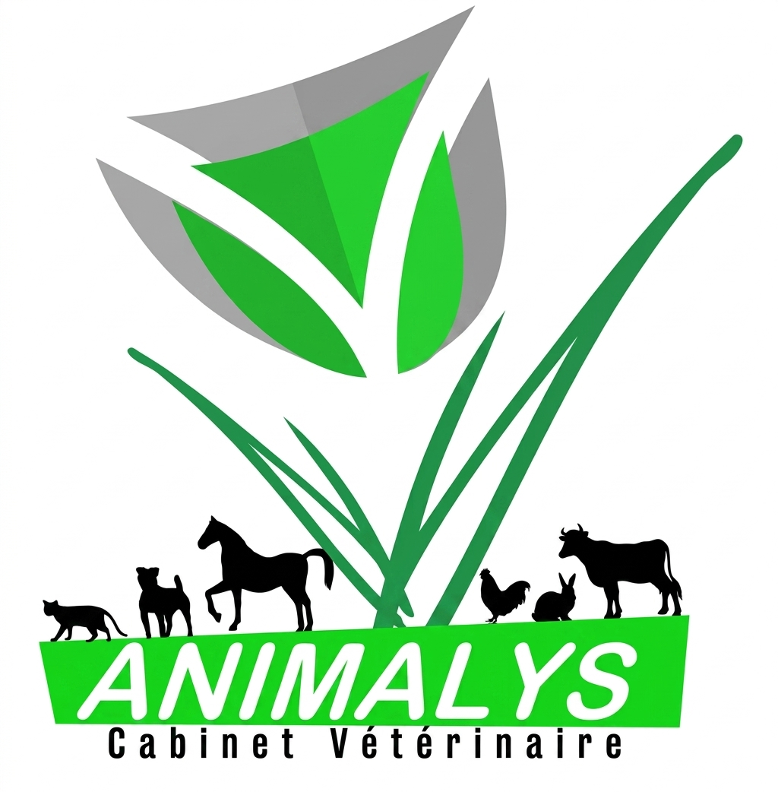
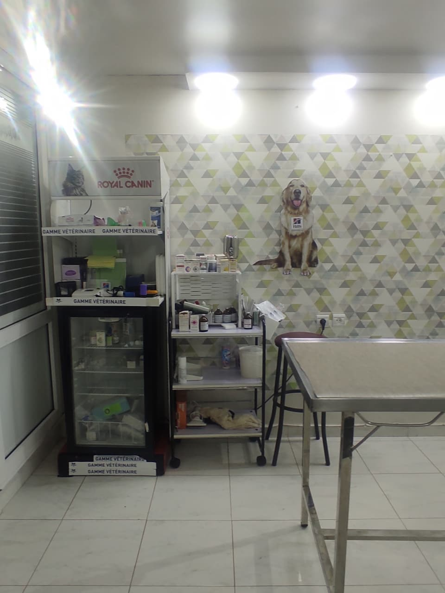
Notre cabinet
Le Cabinet Vétérinaire Animalys accompagne les propriétaires dans la santé et le bien-être de leurs compagnons avec une approche attentive, professionnelle et bienveillante. Notre équipe veille à offrir des soins adaptés aux besoins de chaque animal, dans un environnement propre, rassurant et accueillant.
Ce que nous proposons
Découvrez les principaux services proposés par notre cabinet pour accompagner votre compagnon à chaque étape de sa vie.
Examen complet et suivi de la santé de votre animal, à chaque étape de sa vie.
Protocoles vaccinaux adaptés pour protéger votre compagnon durablement.
Bilans réguliers, dépistage et conseils pour anticiper les problèmes de santé.
Interventions chirurgicales réalisées dans un cadre sécurisé et suivi de près.
Analyses biologiques pour affiner le diagnostic et le suivi thérapeutique.
Diagnostic et traitement des affections de la peau et du pelage.
Soins bucco-dentaires pour prévenir les douleurs et infections.
Examens d'imagerie pour un diagnostic précis et non invasif.
Prise en charge rapide des situations urgentes concernant votre animal.
Identification électronique et mise à jour du fichier national.
Recommandations alimentaires adaptées à l'âge, au poids et à la santé.
Un accompagnement adapté pour préserver le confort de vos compagnons seniors.
Toutes les espèces sont les bienvenues
Suivi santé complet, de la naissance à l'âge senior.
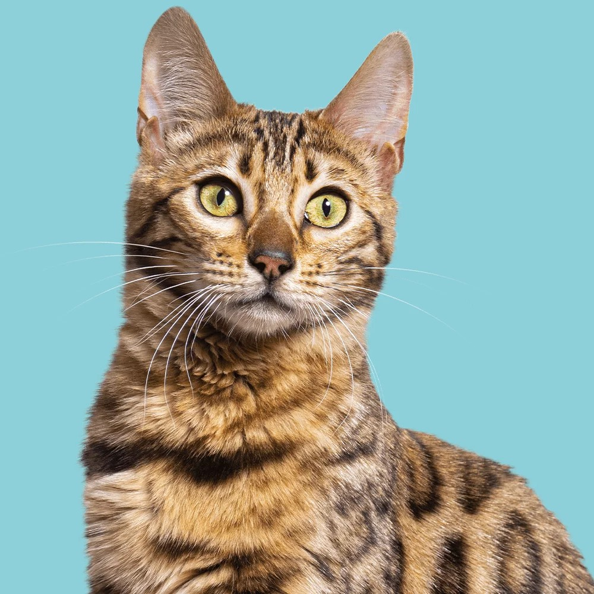
Des soins adaptés à leur tempérament et à leurs besoins spécifiques.
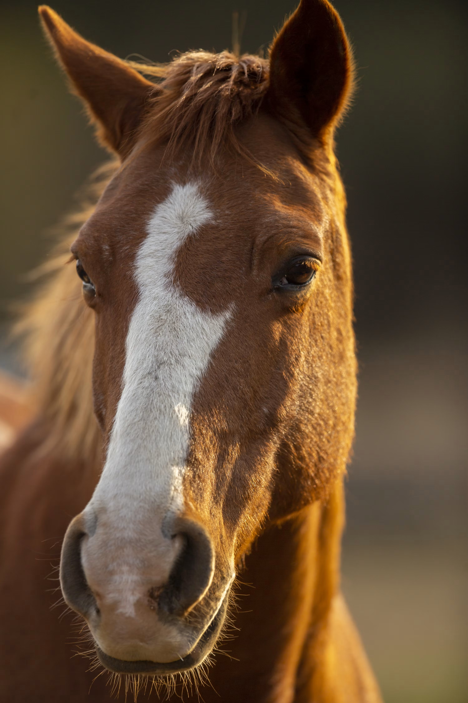
Chevaux : suivi sanitaire, consultations et soins adaptés aux besoins de chaque équidé.
Notre équipe

Dr Vétérinaire Chef de service
Médecin chirurgien spécialisé en petits animaux de compagnie et en chirurgie des équidés
Médecin vétérinaire chirurgien, il a effectué sa formation vétérinaire en Tunisie et poursuit actuellement un doctorat en biotechnologie. Son parcours lui permet d’allier expertise clinique, pratique chirurgicale et intérêt pour la recherche scientifique, avec une attention particulière portée aux petits animaux de compagnie et aux équidés.

Dr Vétérinaire
?
?
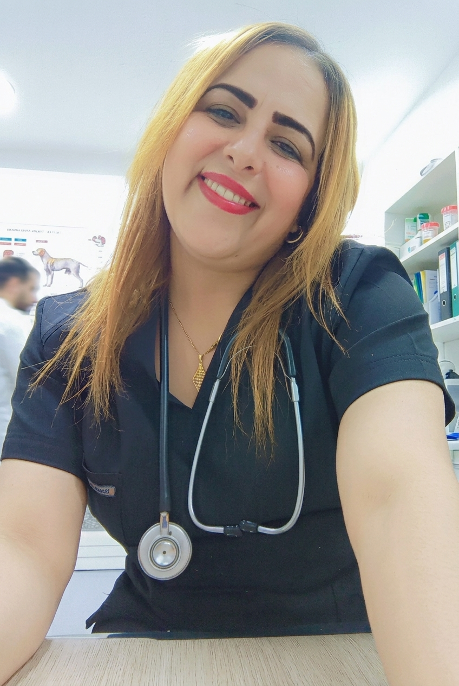
Technicien vétérinaire
Assistante vétérinaire
Assistante vétérinaire, formée à l’établissement Abi Salem Al Ayachi, avec 15 ans d’expérience dans le domaine vétérinaire. Elle accompagne l’équipe dans les soins et le suivi des animaux avec professionnalisme et expérience.
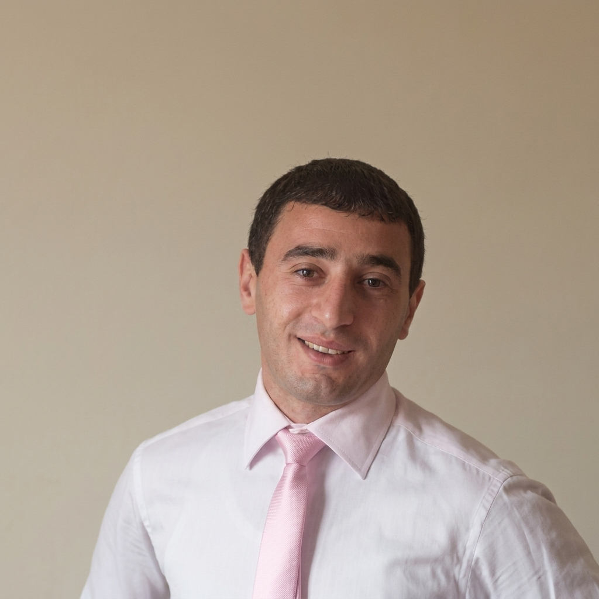
Technicien vétérinaire
Assistant vétérinaire et technicien d’élevage
Formé en institut et lycée agricole d’Aïn Taoujdate. Il a également acquis une expérience professionnelle dans le domaine agricole à Fès avant de rejoindre l’équipe. Fort de 10 ans d’expérience dans le domaine vétérinaire, dont 5 ans au sein de notre équipe, il contribue au suivi des animaux, aux soins et à l’accompagnement des propriétaires avec sérieux et professionnalisme.
Pourquoi nous choisir
Chaque animal et chaque propriétaire sont écoutés avec attention et respect.
Des protocoles adaptés à l'âge, à la race et à l'histoire de chaque animal.
Un plateau technique actualisé pour des diagnostics fiables.
Un accompagnement dans la durée, pas seulement lors des visites.
Des explications claires pour comprendre et accompagner votre animal.
Un cadre calme, propre et pensé pour réduire le stress des animaux.
Un aperçu du cabinet
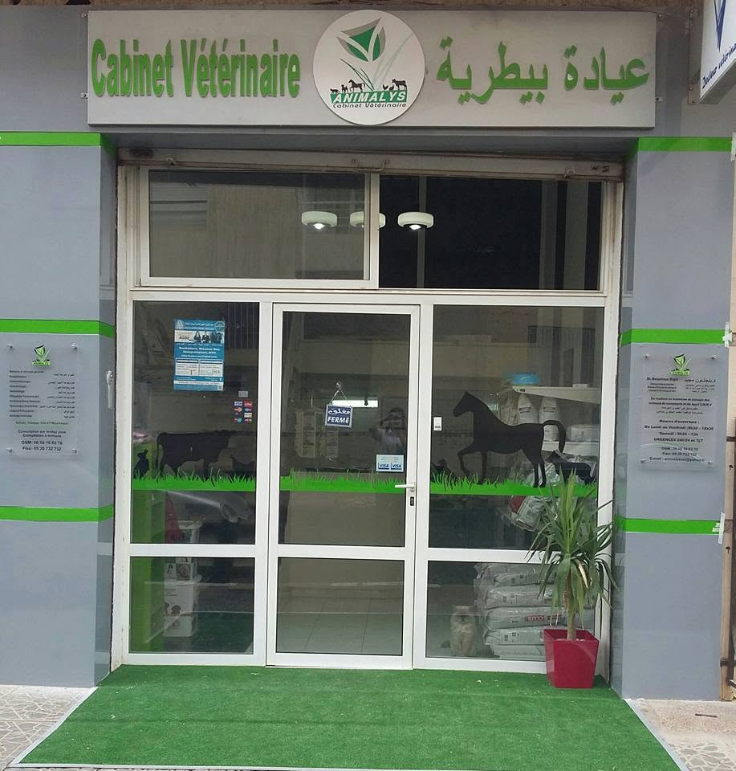
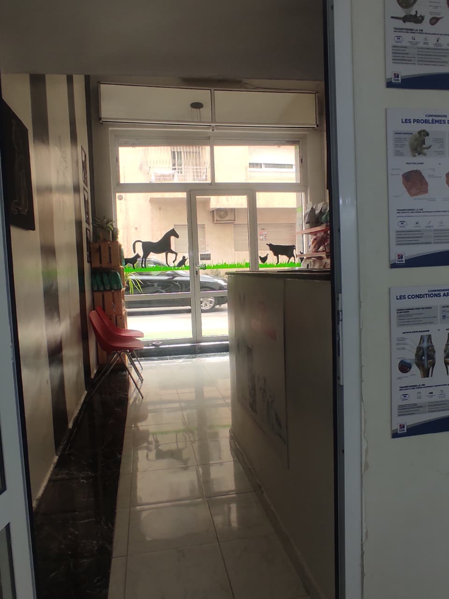
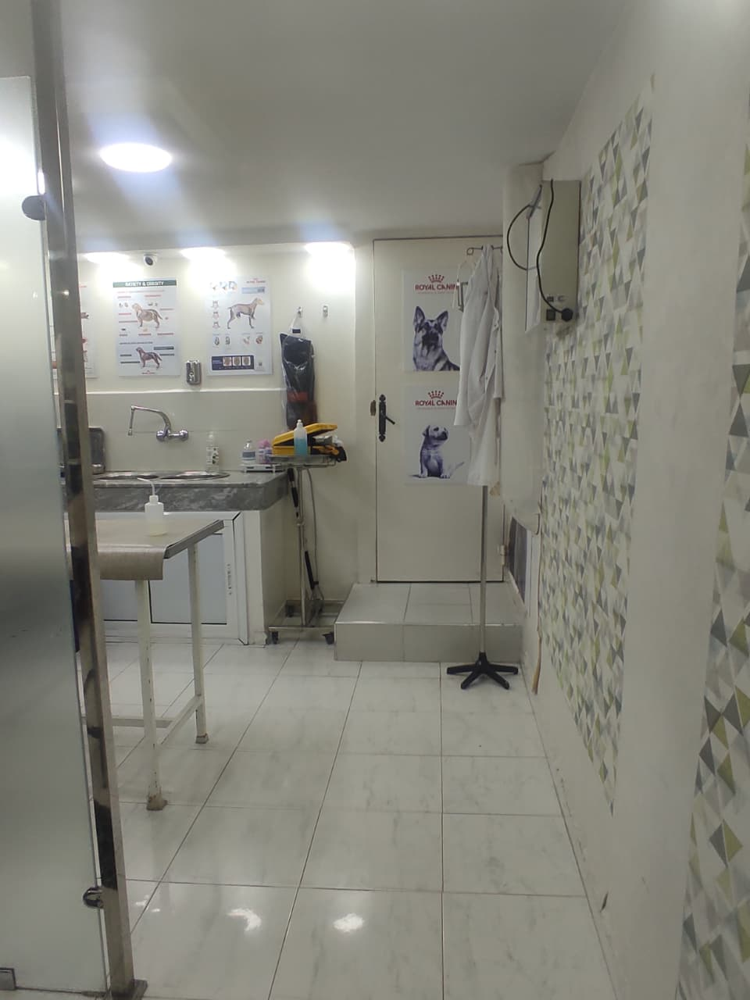
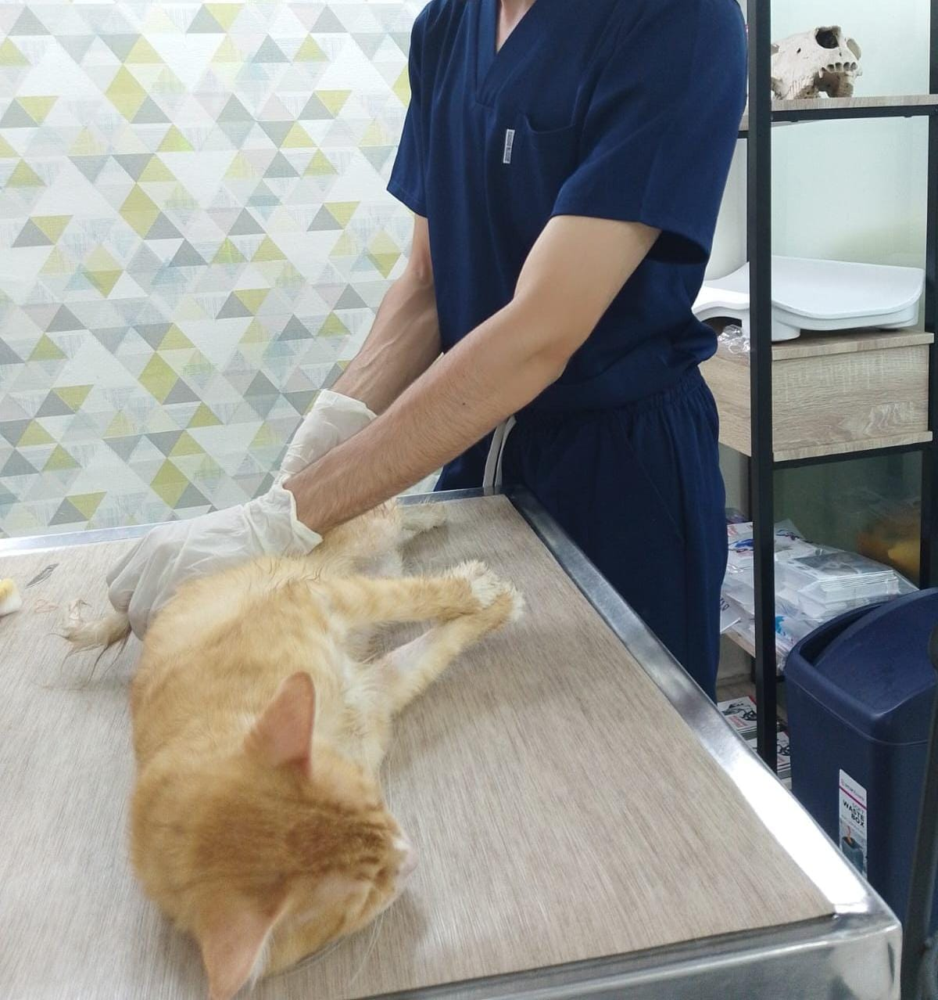
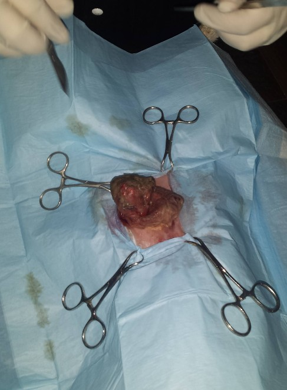
Ils nous font confiance
« Je tiens à remercier le dr majid benjelloun pour son professionnalisme, sa compétence et son dévouement. Il prend le temps d'examiner chaque animal avec attention, d'expliquer clairement la situation et de proposer les meilleurs soins. Son cabinet est accueillant et les animaux y sont traités avec beaucoup de bienveillance. Je recommande vivement le Cabinet Vétérinaire du dr majid benjelloun à toute personne recherchant un vétérinaire de confiance. Je lui souhaite beaucoup de succès et une excellente continuation. »
« Je remercie chaleureusement le docteur Benjelloun pour la réussite de l’opération d’Eva et son suivi. Un vétérinaire très compétent, calme, humain et bienveillant. On sent l’expérience et l’amour du métier. Merci pour votre grand professionnalisme. 🐶💚 »
« Je recommande vivement ce cabinet. C’est un vétérinaire très compétent, professionnel et sérieux. Et ce que j’apprécie particulièrement, au-delà de son expertise, c’est son côté humain, son écoute et sa bienveillance envers les animaux. Il prend le temps d’expliquer les choses clairement, sans pousser à des frais inutiles, ce qui est rare et très appréciable.Le Dr Majid est aussi une personne très correcte et honnête par rapport à d’autres expériences que j’ai pu avoir ailleurs. Pour cela je vous remercie énormément pour votre travail docteur, votre sérieux et votre humanité. Je recommande sans hésitation. »
Ressources
La vaccination protège votre animal contre plusieurs maladies infectieuses. Le calendrier vaccinal est adapté à son espèce, son âge, son mode de vie et son niveau de risque.
La vermifugation aide à prévenir les infestations par les parasites internes. La fréquence dépend de l’âge, du mode de vie et de l’environnement de votre animal.
Une alimentation équilibrée et adaptée à l’âge, au poids, à l’activité et aux besoins spécifiques de votre animal contribue à sa bonne santé et à son bien-être.
Les puces, tiques et autres parasites peuvent transmettre des maladies et provoquer des problèmes cutanés. Une prévention régulière, adaptée à votre animal, est recommandée.
Une bonne hygiène bucco-dentaire permet de limiter l'accumulation de tartre et les maladies des gencives. Le brossage régulier et les contrôles vétérinaires sont importants.
Les visites régulières permettent de détecter précocement d'éventuels problèmes de santé. Un bilan annuel est généralement recommandé, avec des contrôles plus fréquents pour les jeunes, les seniors ou les animaux présentant des besoins particuliers.
Nous sommes disponibles
Notre équipe vous répond rapidement pour organiser la visite de votre compagnon.
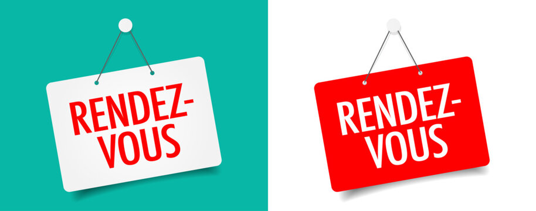
Où nous trouver
Atlas, N3 residence salma, Rue El Abed El Fassi, Fes 30000
Lundi – Vendredi : 09h00 – 19h00
Samedi : 09h00 – 13h00
Dimanche : Fermé